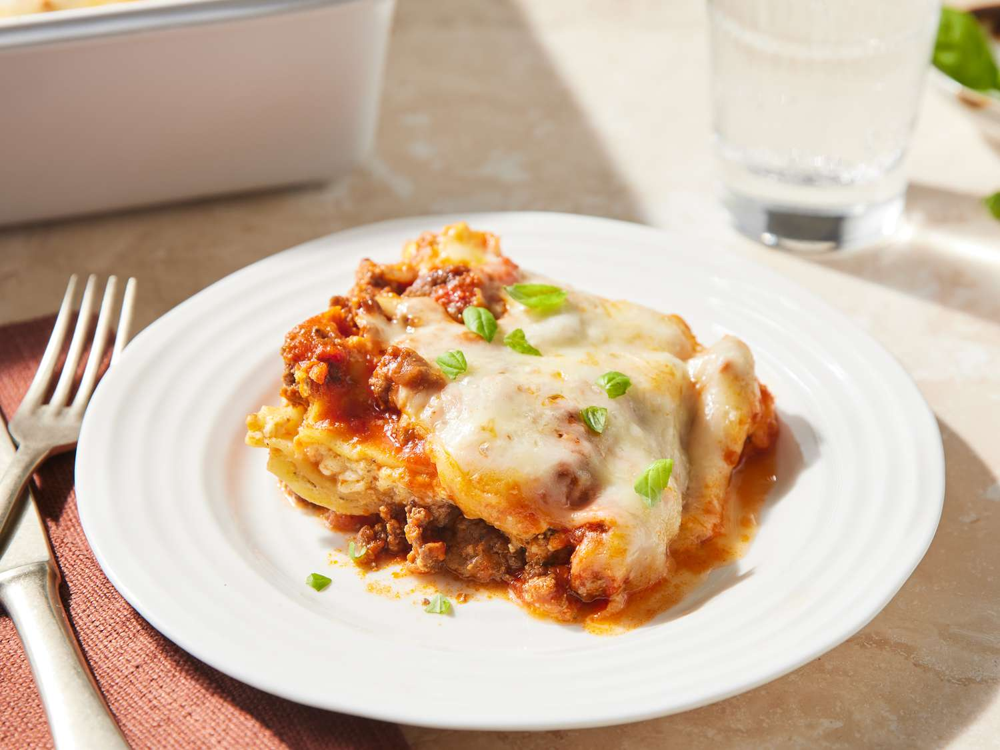

Lasagna

Classic Homemade Lasagna Recipe
Lasagna is the ultimate comfort food, with layers of tender pasta, rich and savory meat sauce, creamy ricotta, and gooey melted cheese. This recipe brings together classic Italian flavors for a dish that’s perfect for family dinners, gatherings, or anytime you're craving a hearty meal. Follow these steps to create a delicious, layered lasagna from scratch.
Ingredients
For the Meat Sauce:
- 1 tablespoon olive oil
- 1 large onion, finely chopped
- 3 cloves garlic, minced
- 1 pound ground beef
- 1/2 pound Italian sausage (optional, for extra flavor)
- 1 can (28 oz) crushed tomatoes
- 1 can (15 oz) tomato sauce
- 1 can (6 oz) tomato paste
- 1/2 cup water
- 2 tablespoons sugar
- 1 tablespoon dried basil
- 1 teaspoon dried oregano
- Salt and black pepper, to taste
- Fresh basil leaves (optional for garnish)
For the Ricotta Mixture:
- 1 container (15 oz) ricotta cheese
- Large egg
- 1/2 cup grated Parmesan cheese
- 2 tablespoons fresh parsley, chopped (or 1 tablespoon dried)
For the Layers:
- 12 lasagna noodles (cooked according to package instructions)
- 3 cups shredded mozzarella cheese
Instructions
Prepare the Meat Sauce
- In a large skillet or pot, heat the olive oil over medium heat. Add the chopped onion and sauté until softened, about 5 minutes.
- Add the garlic and cook for an additional minute.
- Add ground beef and Italian sausage (if using) and cook until browned, breaking it up with a spoon as it cooks. Drain excess fat.
- Stir in the crushed tomatoes, tomato sauce, tomato paste, and water. Add sugar, dried basil, and dried oregano. Season with salt and pepper to taste.
- Reduce heat to low, cover, and let the sauce simmer for at least 30 minutes, stirring occasionally.
Prepare the Ricotta Mixture:
- In a medium bowl, combine ricotta cheese, egg, grated Parmesan cheese, and parsley. Mix until well combined and set aside.
Preheat Oven
- Preheat your oven to 375°F
Assemble the Lasagna
- In a 9x13-inch baking dish, spread a thin layer of meat sauce on the bottom
- Arrange 3 lasagna noodles over the sauce, overlapping slightly. Spread 1/3 of the ricotta mixture over the noodles, then sprinkle with 1 cup of shredded mozzarella cheese. Top with 1/3 of the remaining meat sauce.
- Repeat these layers (noodles, ricotta, mozzarella, meat sauce) two more times, finishing with a final layer of noodles, sauce, and mozzarella on top.
Bake the Lasagna
- Cover the dish with foil (to prevent sticking, either use foil that’s nonstick or spray with cooking spray).
- Bake in the preheated oven for 25 minutes. Remove the foil and bake an additional 15-20 minutes, or until cheese is melted and bubbly.
Serve and Enjoy
- Allow the lasagna to cool for about 10 minutes before slicing. Garnish with fresh basil if desired. Serve and enjoy!